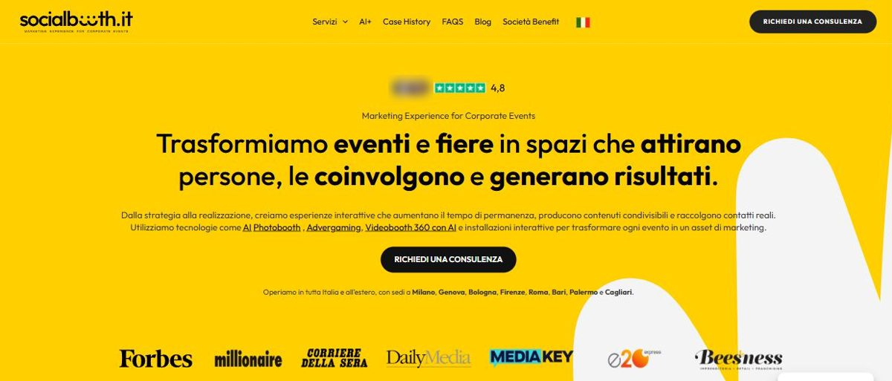
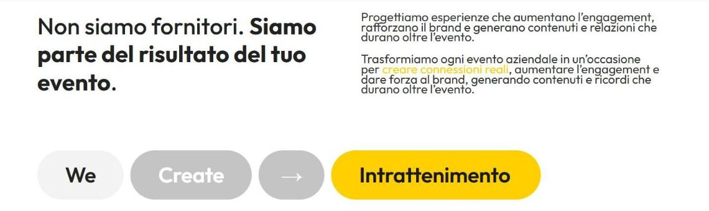
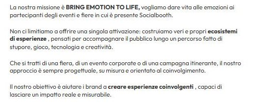
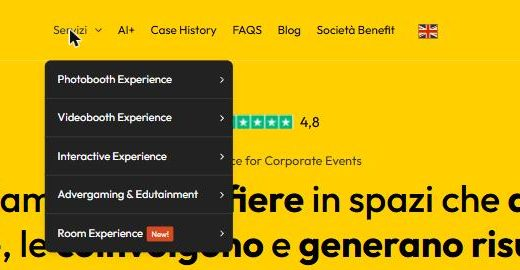
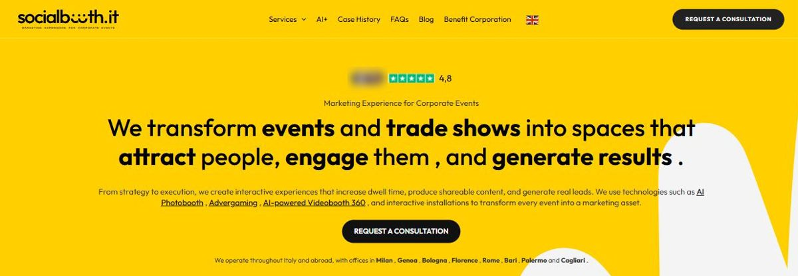
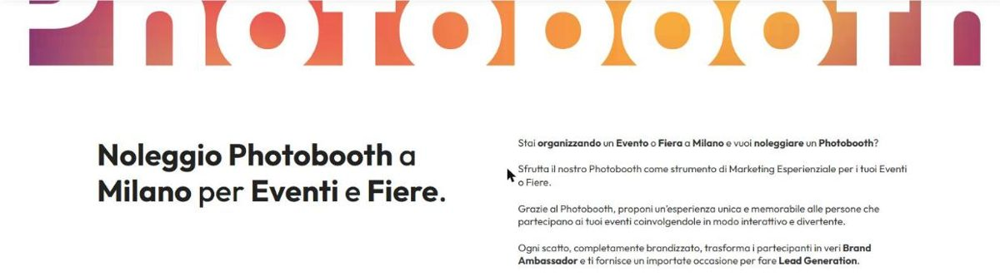

Socialbooth: the mission says emotion. The homepage says results.
A full outside read of Socialbooth's public brand, done the way I'd do it for a paying client. The short version: the company's most distinctive idea is already written down — on the one page almost no buyer ever opens.
Reviewed 26 September 2026 · Scope: homepage, services menu, Photobooth Experience, AI+, Lead generation, Società Benefit, the Milano city page, the case-history archive (70+ entries, 4 read in full), the Trustpilot profile, and the sister domain noleggiophotoboothmilano.it, compared with three direct competitors. Public material only: no interviews, no analytics, nothing internal.
Disclosure
Before founding Studio Dudin, I worked at Socialbooth. While I was there I wrote the line “Bring emotions to life.” A version of it — “BRING EMOTION TO LIFE” — is today the company's published mission. That line is the only thing on this page that comes from the inside. Everything else is an unsolicited audit of Socialbooth's current public brand, built from what anyone can see today, not commissioned and not drawing on anything learned internally. If anyone at Socialbooth would rather this page not exist, email me and it comes down.
Socialbooth is a company built on play and emotion, selling itself with the same results language as everyone else in its category.
Its proof is genuinely strong — 51 reviews at 4.8 on Trustpilot, more than 70 published case histories, national press. Its mission, its vision, its Trustpilot bio and even the smile inside its logo all say the same thing: people come alive when they play. But the homepage leads with “attract, engage, generate results,” a sentence a direct competitor uses almost word for word. The fix isn't a new idea. It's moving the idea they already have to the place where buyers decide.
Where the brand stands today, in four categories.
Proof & credibility
Differentiation
Message consistency
Offer clarity
The pattern is common in companies that grew fast: the delivery and the reputation got ahead of the words. Nothing here needs a rebrand. It needs the existing brand to say one thing, in one place, first.
A homepage that could belong to anyone in the category.

The headline — “Trasformiamo eventi e fiere in spazi che attirano persone, le coinvolgono e generano risultati” — is clear and competent. It's also generic. Here is the hero of Selfieboost, a Milan competitor: “Esperienze interattive con foto, video e intelligenza artificiale per aumentare engagement, visibilità e contenuti condivisibili in tempo reale.” Socialbooth's line under its own headline: “creiamo esperienze interattive che aumentano il tempo di permanenza, producono contenuti condivisibili e raccolgono contatti reali.” Swap the logos and a buyer couldn't tell which is which.
Further down, the homepage has a much sharper sentence — “Non siamo fornitori. Siamo parte del risultato del tuo evento.” — followed by an animated line, “We Create →”, cycling through Intrattenimento, Valore, Future, Connection, Interaction, Lead, Engagement. Seven words, two languages, and the one word the company says it exists for isn't among them.

“Bring emotion to life” is on the Società Benefit page.

The same page states a vision a competitor couldn't easily copy: “il gioco crea emozioni, relazioni e fa sentire vivi.” The Trustpilot profile says “Creiamo emozioni condivise durante gli eventi.” The logo turns the two o's of “booth” into a smile. The clients who reviewed them talk about fun and warmth as much as execution — “super divertente,” “soluzioni sempre innovative e memorabili.”
What the homepage leads with
Attract, engage, generate results. Dwell time, shareable content, real leads. True, and claimed by every serious competitor.
What the company says it's for
Bring emotion to life. Play makes people feel alive — and that feeling is what makes them stay, share and leave their email.
These two aren't in conflict. Emotion is the mechanism; results are the proof. Right now the homepage shows the proof without the mechanism, which is exactly what makes it sound like everyone else.
Nobody in the category owns emotion. Everybody owns “engagement.”
| Brand | Lead message (homepage) | Proof on the page | Who it's for |
|---|---|---|---|
| Socialbooth | Events and fairs that attract people, engage them and generate results. | Trustpilot 4.8 (51 reviews), 70+ case histories, press logos, ISO badges | Corporate events, fairs, agencies |
| Selfieboost | Interactive photo, video and AI experiences to increase engagement, visibility and shareable content. | Event photo gallery | Corporate and weddings |
| Babooth | Branded, customised photobooth rental with instant digital sharing. | Founded 2013, a portfolio of branded projects for well-known brands | Corporate and weddings |
| Say Cheese | A creative studio designing unforgettable experiences for brands and agencies. | Ten years, case studies, a stated repeat-client rate, openly “not the cheapest” | Brands and agencies (weddings under a separate name) |
Two things stand out. Socialbooth has the strongest proof of the four and one of the least distinctive lead messages. And the only competitor with a clear identity — Say Cheese, positioned as a creative studio that is openly not the cheapest — got there by saying what it isn't. Socialbooth already has its equivalent line, “Non siamo fornitori,” and a mission nobody else can claim. It just isn't using them first.
Competitor lines are summarised in English from their Italian homepages as published on 26 September 2026.
Two buyers, reading for different things.
The brand marketer
Has a budget line to justify. The homepage is written for this person — dwell time, content, leads, a dashboard — and that's right. What this buyer is missing is a reason to pick Socialbooth over the next supplier making the same promise, and numbers on the case pages to put in the internal report.
The agency or event producer
The contact form asks “Chi sei?” with Azienda / Agenzia as the options, so agencies are clearly a core buyer. This person is staking their own client relationship on the supplier. The reviews speak straight to them — “Staff perfetto, servizio ottimo,” “Cortesia, professionalità e disponibilità” — but the site never addresses them directly.
What both respond to
An attendee who is visibly having a good time is the one thing both buyers want and neither can produce alone. That's the emotional outcome the mission describes. Leading with it serves both: the marketer gets a differentiator, the producer gets a partner who makes the event look good.
Four places where the brand works against itself.
A catalogue that contradicts its own advice
The Photobooth Experience page says it well: “Il photobooth giusto si sceglie sull'evento, non sul catalogo.” The navigation above it is a catalogue: five families and 28 products, from Green Screen to Social Bike. A first-time buyer is asked to choose by product — exactly what the page tells them not to do.

Results promised, rarely shown
The homepage promises results and a post-event dashboard with the data. Of the four case histories I read in full, one reports numbers — Petronas at the Turin Auto Show: over 1,100 shots, over 123,000 people reached, over 400,000 impressions. Hot Wheels, Fiat 500 at the Deejay Ten and Hoffman Essentials describe full stores and good moments, with no figures. For a brand that sells measurable outcomes, that's the proof buyers look for and mostly don't find.
Two languages, two spellings, two looks
Visitors with an English-language browser are switched automatically to a machine translation (“engage them , and generate results .”). The logo tagline, the “We Create” line and the service family names are in English inside Italian copy. The Milano city page swaps the homepage's yellow and black for an orange-to-magenta gradient. And a second domain run by the same company, noleggiophotoboothmilano.it, sells the same service while calling the registered trademark “Social Booth” — two words, where the main site writes Socialbooth®.


Small slips that cost trust
On the Milano page: “Vuoi Noleggiare un Phootbooth a Milano per un’evento?” and “un importate occasione per fare Lead Generation.” In the case archive, industry tags read “Cyber Securty” and “Food & Bverage,” and AI projects are tagged both “AI” and “IA.” Each is trivial on its own. Together, on a brand that sells polish at corporate events, they read as nobody owning the words.
What the brand could say instead.
A draft built only from Socialbooth's own published words — the positioning a paid engagement would pressure-test, not a finished answer.
Draft positioning
“Bring emotion to life — and measure what it does for your brand.”
The first half is their mission, unchanged. The second half is the promise the homepage already makes. Together they say something no competitor in the scan can say: the feeling is the method, and the numbers are the receipt.
Message order
Promise: people at your event play, laugh and remember it. Mechanism: play is designed, not added — “il gioco crea emozioni, relazioni e fa sentire vivi.” Proof: dwell time, content, contacts and reach, reported per event, the way the Petronas case already does.
Offer by goal, not by product
Group the 28 products under four event goals: Attract (bring people to the stand), Engage (keep them there), Capture (leads and data), Amplify (content and reach after the event). The products stay the same; the buyer chooses by what they need the event to do, which is the site's own advice.
If this were a paid engagement, it would start here.
This week
- Fix the typos on the city pages and the case-archive tags.
- Pick one spelling of the name and use it everywhere.
- Set the page language to Italian and turn off automatic machine translation.
This month
- Put “Bring emotion to life” in the homepage hero, with “Non siamo fornitori” directly under it.
- Add a four-line results block — shots, dwell time, contacts, reach — to every new case history, starting from the Petronas format.
- Speak to agencies directly in one homepage section, using the reviews that already praise the team.
This quarter
- Restructure the services menu around the four goals: Attract, Engage, Capture, Amplify.
- Bring the city pages into the homepage's visual system, and decide whether the second domain still earns its place.
- Decide on English: a written English version, or Italian only. Machine translation shouldn't be the choice by default.
What this audit leaves out: a paid Positioning Audit adds a working session with the team, access to analytics and enquiry data, and a read of which pages and products actually bring in revenue. None of that happened here. The direction above is a first draft from public material, meant to be argued with.

Want this kind of read on your own brand?
€1,200 · 1 week · no obligation beyond the audit itself